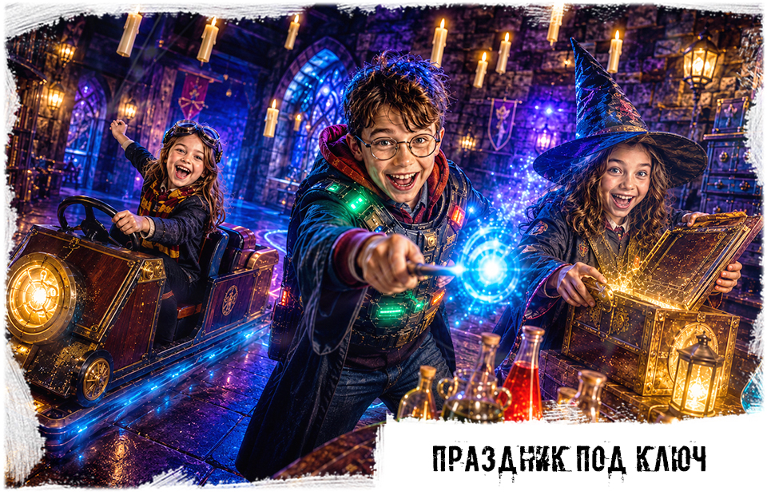
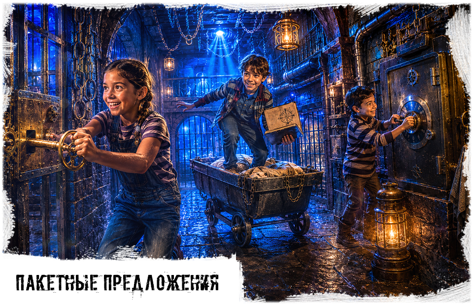

Что можно выбрать в Иркутске




Почему удобно выбрать IQuest в Иркутске
Вместо поиска по разным площадкам можно сразу выбрать формат праздника в Иркутске: квест, пакет с чайной зоной, активную игру или день рождения под ключ.
2 площадки в Иркутске
мк-н Юбилейный, 17 и ул. Баррикад, 33. Администратор подскажет, где проходит нужный сценарий и какой адрес удобнее.
Пакеты для дня рождения
Можно выбрать отдельный квест, пакетный праздник за 25 000 руб. или большой формат под ключ за 80 000 руб.
Для детей и подростков
Есть мягкие приключенческие сценарии, активные игры и более динамичные форматы для школьников постарше.
Что входит в детский праздник в Иркутске
Перед бронированием администратор помогает собрать программу под возраст, количество гостей и нужный адрес: можно выбрать только игру или расширить праздник чайной зоной и дополнительными услугами.
В базовой программе
Сценарий, ведущий или аниматор по формату, инструктаж, игровая зона и сопровождение команды во время квеста или активной игры.
Для дня рождения
Можно добавить чайную зону, время для торта, поздравление, фото, праздничную посуду и помощь администратора с таймингом.
Что гости берут с собой
Торт, еду, напитки и индивидуальные украшения можно принести самостоятельно; детали лучше согласовать при бронировании.
Цены и условия детских праздников в Иркутске
Собрали основные условия, по которым чаще всего ищут детские квесты и день рождения в Иркутске: цены, возраст, количество игроков, длительность, адреса и наличие чайной зоны.
Квесты и активные игры - от 1500 руб./чел.; пакетный праздник - 25 000 руб.; праздник под ключ - 80 000 руб.
Основные детские форматы рассчитаны на 7+, для подростков доступны мистические и более динамичные сценарии.
Обычно 4-20 игроков в квесте; для праздника под ключ можно собрать компанию от 10 гостей.
Базовая игра обычно длится 1 час, праздник можно расширить чайной зоной и дополнительными активностями.
Иркутск: мк-н Юбилейный, 17; ул. Баррикад, 33. Точный адрес зависит от выбранного сценария.
Для дня рождения можно добавить чайную зону, торт, поздравление и время для гостей после игры.
В детских форматах акцент на приключении; актеры или ведущий подключаются в отдельных сценариях и пакетах.
Для детей выбираем безопасные сценарии без жесткого хоррора; подросткам можно подобрать мистику мягкого уровня.
Сравнение детских сценариев в Иркутске
| Сценарий | Возраст | Игроки | Формат | Адрес | Для дня рождения |
|---|---|---|---|---|---|
| Под ключ | 7+ | 10+ гостей | игра + чайная зона + организация | Юбилейный, 17; Баррикад, 33 | да |
| Пакеты | 7+ | 10+ гостей | готовая праздничная программа | Юбилейный, 17; Баррикад, 33 | да |
| Гарри Поттер | 7+ | 4-20 | волшебный квест | Юбилейный, 17; Баррикад, 33 | да |
| Замок Дракулы | 7+ | 4-20 | мистический квест | мк-н Юбилейный, 17 | да |
| Нерф | 7+ | 4-20 | активная игра | Иркутск | да |
| Лазертаг | 7+ | 4-20 | командная битва | Иркутск | да |
| Прятки | 7+ | 4-30 | игра в темноте | Иркутск | да |
| Космический корабль | 7+ | 4-20 | приключенческий квест | Иркутск | да |
Как записаться
Что ждет по приезду
Что есть в комнате
Что можно приобрести у нас
Что взять с собой
Чем займутся родители
Детские праздники в Иркутске по адресам IQuest
Детские праздники в Иркутске проходят на двух площадках IQuest: мк-н Юбилейный, 17 и ул. Баррикад, 33. Юбилейный удобен семьям из Свердловского района, а Баррикад чаще выбирают те, кому ближе Куйбышевский район, Больница N9 и район Доренберга.
На Юбилейном площадка находится на 1 этаже. На Баррикад в карточках указан 3 этаж и домофон 7. Точный адрес сценария лучше уточнять при бронировании: в Иркутске разные квесты, лазертаг, NERF, прятки и чайная зона могут быть привязаны к разным площадкам.
Для младших детей чаще выбирают Гарри Поттера, Космический корабль, NERF или лазертаг. Для подростков можно рассмотреть Прятки, Замок Дракулы, Among Us, NERF, лазертаг и более динамичные командные форматы. Если нужен день рождения под ключ, администратор сразу подберет адрес, тайминг и программу под возраст, дату и количество гостей.
Что чаще всего ищут
детские праздники Иркутск цены
детский день рождения Иркутск под ключ
пакеты детского дня рождения Иркутск
квесты для детей Иркутск 7+
лазертаг Иркутск для детей
Нерф Иркутск для детей
прятки Иркутск для детей
Как выбрать формат
Две площадки
В Иркутске доступны адреса мк-н Юбилейный, 17 и ул. Баррикад, 33. Подберем площадку под сценарий, возраст и количество гостей.
Праздник можно собрать под ключ
Квест, активная игра, чайная зона и дополнительные услуги складываются в понятную программу для дня рождения или класса.
Подбор по возрасту
Для младших детей выбираем понятные приключения, для подростков - больше динамики, мистики и командных испытаний.
Адрес площадки
Юбилейный, 17
Свердловский район, 1 этаж. Удобно для семей из Юбилейного и ближайших районов; перед приездом лучше уточнить, какой сценарий проходит именно здесь.
Вернуться к выбору городаБаррикад, 33
Куйбышевский район, 3 этаж, домофон 7. Ориентиры района: Больница N9 и Доренберг. Вход и место встречи лучше подтвердить при бронировании.
Страшные квестыНужна помощь с выбором?
Позвоните, расскажите возраст, размер компании и желаемую атмосферу. Администратор подскажет свободные сценарии, адрес и стоимость.
8 (901) 666-888-1Отзывы о площадках IQuest в Иркутске
Перед бронированием можно посмотреть актуальные оценки, фото и отзывы гостей на внешних площадках. Это помогает выбрать адрес и формат праздника спокойнее.
Юбилейный, 17
Площадка в Свердловском районе: квесты, детские праздники, чайная зона и программы для школьных компаний.
Отзывы в 2ГИСОтзывы в Яндекс КартахОтзывы в GoogleVK IQuestБаррикад, 33
Площадка в Куйбышевском районе: сценарии для детей и подростков, праздники и квесты на день рождения.
Отзывы в 2ГИСОтзывы в Яндекс КартахОтзывы в GoogleVK IQuestДругие детские форматы в Иркутске
Готовые праздники
Если нужно собрать день рождения без лишней подготовки, посмотрите пакеты и праздник под ключ.
День рождения под ключПакеты праздникаАктивные игры
Для подвижной компании подойдут лазертаг, Нерф и прятки в темноте.
Лазертаг в ИркутскеНерф в ИркутскеПрятки в ИркутскеКак забронировать детский праздник в Иркутске
Выберите повод
День рождения, выпускной, праздник класса или семейная встреча требуют разного тайминга, чайной зоны и количества активностей.
Назовите возраст и гостей
Для детей 7+, подростков и смешанных компаний подбираются разные сценарии, уровень динамики и длительность программы.
Согласуйте адрес
В Иркутске доступны площадки в мк-не Юбилейный и на ул. Баррикад; точный адрес зависит от выбранного сценария и свободного времени.
Частые вопросы
Где проходят детские праздники в Иркутске?
Площадки находятся по адресам мк-н Юбилейный, 17 и ул. Баррикад, 33. Точный адрес зависит от выбранной игры.
Чем Юбилейный отличается от Баррикад?
Юбилейный удобнее семьям из Свердловского района и гостям, которым нужен адрес в жилом микрорайоне. Баррикад удобнее тем, кто ориентируется на Куйбышевский район, Больницу N9 и Доренберг.
Как найти площадку на Баррикад?
Для ул. Баррикад, 33 в карточках указан 3 этаж и домофон 7. Перед праздником лучше уточнить у администратора актуальный вход и место встречи гостей.
Можно ли заказать день рождения под ключ?
Да. Можно выбрать игру, чайную зону, дополнительные активности, фото и помощь администратора.
Где ждут родители?
Родители могут находиться на площадке, в зоне ожидания или чайной зоне. Если взрослых будет много, лучше заранее сказать об этом при бронировании.
Что выбрать для подростков?
Обычно подросткам подходят Замок Дракулы, Нерф, Лазертаг, Прятки, Космический корабль и командные квесты.
Как узнать стоимость?
Позвоните и назовите дату, возраст детей, количество гостей и желаемый формат. Администратор подскажет варианты и цену.
Можно ли принести свой торт и еду?
Да, можно принести торт, еду, напитки и украшения. Детали по чайной зоне лучше согласовать при бронировании.
Где посмотреть отзывы?
Отзывы по иркутским площадкам можно посмотреть в Яндекс Картах, 2ГИС и Google Картах по адресам мк-н Юбилейный, 17 и ул. Баррикад, 33.
Подобрать детский праздник в Иркутске
Позвоните, и мы поможем выбрать площадку, сценарий и программу под возраст детей, дату и количество гостей.
8 (901) 666-888-1